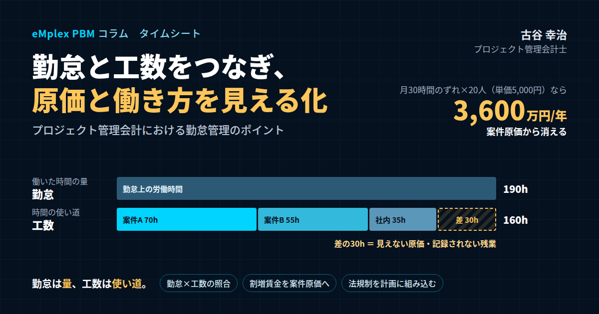

プロジェクト管理会計における勤怠管理のポイント―勤怠と工数をつなぎ、原価と働き方を同時に見える化する
結論：勤怠は「労務のデータ」、工数は「原価のデータ」。二つをつなぐと経営のデータになる
最初に結論を申し上げます。プロジェクト型ビジネスにおける勤怠管理は、給与計算と法令遵守のための事務作業にとどまるものではありません。勤怠管理で記録される「どれだけ働いたか」というデータと、工数管理で記録される「その時間をどの案件に使ったか」というデータを、同じ時間の記録として整合させ、つなげて見ることで、初めて案件の本当の原価と、社員の働き方の実態の両方が見えるようになります。勤怠と工数をつなぐことは、正確な原価計算と、健全な労務管理と、そして経営の判断の質を、同時に高めるための基盤なのです。
勤怠管理とは、従業員の始業と終業の時刻、休憩時間、遅刻や早退、休暇の取得といった就業の状況を、会社が把握し、管理することです。労働時間を適正に把握することは、法律で会社に求められている責務であり、経営者や人事・総務の担当者にとって欠かせない業務の一つです。給与を正しく計算するため、長時間労働を防いで社員の健康を守るため、そして未払いの残業代などのトラブルを避けるため。勤怠管理が必要な理由は、多くの解説書で語られているとおりです。
しかし、プロジェクト型ビジネスの経営者や管理部門の方にお伝えしたいのは、勤怠管理にはもう一つの大きな意味があるということです。それは、勤怠のデータが、案件の原価の正しさを支える土台になっているということです。
プロジェクト型ビジネスの原価の大部分は、社員の人件費です。そして、その人件費を案件ごとに配分するための根拠は、社員が各案件に使った時間、つまり工数です。ところが、多くの会社では、勤怠は勤怠管理のシステムで、工数は別のエクセルやシステムで、別々に記録され、両者の整合は誰も確認していません。勤怠の上では月に二百時間働いているのに、工数の合計は百六十時間しかない。この差の四十時間は、どの案件の原価にもなっておらず、実際には原価である可能性が高い時間が、会社の帳簿から消えているのです。逆に、勤怠の時間より工数の合計の方が多ければ、どちらかの記録が実態を反映していないことになります。
新卒で入社した朋友建設では、現場の職員たちが、工期に追われて長時間働く姿を日常的に目にしていました。しかし、その時間がどの工事にどれだけ使われているのかは、会社としてほとんど把握されていませんでした。働いた時間の記録と、工事ごとの原価が結びついていなかったのです。会社が和議という局面を迎える過程で、工事の採算が経営から見えていなかったことの怖さを知った私は、時間の記録と原価をつなぐことの大切さを、今も仕事の原点にしています。
私はプロジェクト管理会計の専門家として、これまで200社を超えるプロジェクト型企業の経営管理を支援してきました。その中で、案件の採算の数字が信用できないという相談の原因をたどっていくと、勤怠と工数のずれに行き着くことが少なくありません。記録されていない残業、案件に紐づけられていない時間、月末にまとめて推測で入力された工数。これらが積み重なると、案件の原価は実態より小さく見え、赤字の案件が黒字に見えてしまいます。そして、その背後には、長時間労働という、社員の健康に関わる問題が隠れていることもあります。
とりわけ、人の時間が売上と原価の両方を生み出すプロジェクト型ビジネスでは、勤怠の記録の質が、そのまま経営の数字の質を左右します。勤怠を「人事のための記録」から「経営のための記録」へと位置づけ直すことが、本稿の最も伝えたいことです。
私自身、エンプレックスでCFOを務めた際、案件ごとの原価管理の仕組みを整える中で、勤怠の記録と工数の記録を突き合わせることの重要性を痛感しました。両者を毎月照合する運用を始めたところ、特定の案件の特定のメンバーに、記録されていない長時間の作業が集中していることが見えてきたのです。その案件は、帳簿の上では黒字でしたが、実際の時間を反映すると、採算はぎりぎりでした。原価の問題と労務の問題が、同じ一つのずれから同時に見えてきたのです。
本稿では、勤怠管理の基本を確認したうえで、勤怠管理と工数管理の違いと整合のさせ方、割増賃金を含めた人件費の原価への反映、法律の規制を案件の計画に組み込む方法、多様な働き方への対応、勤怠管理の方法とシステムの選び方、そして導入と運用の進め方までを、プロジェクト管理会計の視点から実務的にお伝えします。
なお、本稿は労働法令の一般的な考え方を整理したものであり、個別の労務の取り扱いについては、社会保険労務士や弁護士などの専門家にご確認ください。
勤怠と工数をつなぐことは、大きなシステムの投資を必要とするものではありません。まずは、今ある勤怠の記録と工数の記録を、社員ごと、月ごとに並べてみることから始められます。その差を眺めるだけで、自社の原価管理と労務管理がどれだけ実態を捉えているのかが、驚くほどはっきりと見えてくるはずです。
本稿の前半では、勤怠管理の法律上の基本を確認します。すでにご存じの内容も含まれているかもしれませんが、プロジェクト型ビジネスで特に注意すべき点を意識して整理していますので、自社の運用を点検する材料としてお読みいただければ幸いです。後半では、勤怠のデータを原価の管理と案件の計画に生かす、プロジェクト管理会計ならではの視点をお伝えします。
勤怠管理の基本：労働時間の定義と、把握すべき対象
勤怠管理の話を進める前に、その基本を確認しておきます。プロジェクト管理会計の視点から勤怠を扱う場合でも、法律上の基本を正しく理解していることが前提になるからです。
まず、労働時間の定義です。厚生労働省の「労働時間の適正な把握のために使用者が講ずべき措置に関するガイドライン」では、労働時間とは、使用者の指揮命令下に置かれている時間であり、使用者の明示または黙示の指示により労働者が業務に従事する時間は労働時間に当たるとされています。業務上義務づけられている研修の受講や、使用者の指示により業務に必要な学習などを行っていた時間も、労働時間に該当します。
プロジェクト型ビジネスで特に注意したいのは、「黙示の指示」という考え方です。上司が明確に残業を命じていなくても、案件の納期に間に合わせるために、残業をしなければ終わらない量の仕事を与えていれば、その残業は黙示の指示による労働時間と判断される可能性があります。納期の迫った案件で、社員が「自主的に」夜遅くまで作業している状態は、会社の責任の外にあるわけではないのです。
次に、休憩時間です。労働基準法では、労働時間が六時間を超える場合には少なくとも四十五分、八時間を超える場合には少なくとも一時間の休憩時間を、労働時間の途中に与えなければならないとされています。休憩時間は、労働から完全に離れることが保障された時間でなければなりません。案件の対応のために、昼休みにも顧客からの電話やメッセージに応じている状態が続いていれば、それは休憩時間ではなく、労働時間とみなされる可能性があります。
勤怠管理の対象となる従業員についても確認しておきます。先ほどのガイドラインでは、管理監督者や、あらかじめ決められた時間を働いたとみなすみなし労働時間制が適用される従業員は、労働時間の適正な把握の措置の対象からは除かれています。しかし、ここで注意が必要です。労働安全衛生法では、長時間労働をしている従業員に対する医師の面接指導を適切に行うため、会社は、管理監督者やみなし労働時間制が適用される従業員も含めて、労働時間の状況を把握しなければならないとされています。つまり、健康の確保の観点からは、管理職を含めたほぼすべての従業員について、働いた時間の状況を把握する必要があるのです。
プロジェクト型ビジネスでは、プロジェクトマネージャーなどの管理職が、案件の山場で最も長時間働いていることが少なくありません。管理職の労働時間を把握していない会社では、この負荷が見えないままになります。勤怠の把握の対象を、健康の確保の観点から管理職にまで広げておくことは、法律への対応であると同時に、案件の原価の実態を知るためにも役立ちます。
勤怠管理で記録すべき主な項目は、出勤日と欠勤日、始業と終業の時刻、休憩時間、時間外労働・深夜労働・休日労働の時間、そして年次有給休暇の取得日数と残りの日数です。賃金は全額を支払うことが原則とされているため、労働時間は原則として一分単位で把握することになります。
また、出勤簿やタイムカードなどの労働時間の記録は、法律で一定の期間の保存が義務づけられています。労働基準法では保存期間は五年とされていますが、経過措置により当分の間は三年とされています。未払いの残業代の請求などのトラブルが起きた際にも、客観的な記録が保存されていることが、会社を守る根拠になります。
プロジェクト型ビジネスでは、顧客先に常駐して作業する社員や、複数の顧客先を移動しながら働く社員も少なくありません。顧客先での作業の開始と終了の時刻、顧客先の間の移動の時間を、どう記録するかも、あらかじめルールを決めておく必要があります。移動の時間が労働時間に当たるかどうかは、その移動が業務の一部として指示されているかなどによって判断が分かれるため、社内の取り扱いを明確にし、必要に応じて専門家に確認しておくとよいでしょう。
客観的な記録の方法についても触れておきます。先ほどのガイドラインでは、労働時間の把握は、原則として、使用者が自ら現認するか、タイムカードやICカード、パソコンの使用時間の記録などの客観的な記録を基礎として確認し、記録することとされています。自己申告による把握は例外的な方法であり、その場合には、自己申告の時間と実際の労働時間の間に乖離がないかを確認するための措置を講じることが求められています。プロジェクト型ビジネスでは、工数の記録が自己申告で行われることが多いため、勤怠の客観的な記録と照合することの意味は、一層大きくなります。
勤怠管理が不十分な場合のリスクは、法律上の罰則だけではありません。未払いの残業代の請求を受ければ、過去に遡って多額の支払いが必要になることがあります。長時間労働によって社員が健康を損なえば、会社の安全配慮の責任が問われることもあります。そして、こうした問題が表面化すれば、採用や顧客との取引にも影響が及びます。プロジェクト型ビジネスは人材が価値の源泉であるだけに、勤怠管理の不備は、事業の根幹を揺るがしかねないのです。
勤怠管理の担い手についても触れておきます。多くの会社では、勤怠の管理は人事や総務の担当者が、工数の管理はプロジェクトマネージャーや経営企画の担当者が、それぞれ別々に担っています。担当が分かれていること自体は自然なことですが、両者が互いのデータを見ずに管理していると、先ほど述べたずれは誰にも気づかれないままになります。勤怠と工数をつなぐためには、まず担当者どうしが互いの管理の目的を理解し、データを共有することから始める必要があります。
勤怠管理と工数管理の違い、そして両者を整合させる方法
勤怠管理と工数管理は、どちらも社員の時間を記録するものですが、その目的も、記録の単位も、使う人も異なります。
勤怠管理の目的は、社員が何時から何時まで働いたのか、どれだけの時間外労働や休日労働をしたのかを把握し、給与を正しく計算し、法律を守り、社員の健康を守ることです。記録の単位は、人と日です。主に使うのは、人事や総務、給与計算の担当者です。
工数管理の目的は、社員の時間が、どの案件の、どの作業に使われたのかを把握し、案件ごとの原価を計算し、採算を管理し、見積の精度を上げることです。記録の単位は、人と日に加えて、案件と作業です。主に使うのは、プロジェクトマネージャーや経営企画、経理の担当者です。
勤怠管理と似た言葉に、就業管理があります。就業管理は、始業と終業の時刻や休憩、休日を定め、働き方を総合的に管理することであり、勤怠管理はその基礎になるものです。これに対して、工数管理は、働いた時間の「中身」を管理するものだと言えます。勤怠が時間の「量」を記録するのに対し、工数は時間の「使い道」を記録するのです。
目的が違っても、記録しているのは同じ一人の社員の、同じ一日の時間です。したがって、勤怠で記録された労働時間と、工数で記録された作業時間の合計は、本来は一致するはずです。この一致を確認することが、勤怠と工数をつなぐ最初の一歩になります。
実際に照合してみると、多くの会社で、両者の間にずれが見つかります。ずれの原因は、大きく四つに分けられます。
一つ目は、工数の記録の漏れです。社内の会議や、メールの対応、案件の合間の細かな作業が、工数として記録されていない。工数の合計が、勤怠の時間を下回る典型的な原因です。
二つ目は、勤怠の記録の漏れです。自宅での作業や、終業の打刻の後の作業が、勤怠として記録されていない。工数の記録には表れているのに、勤怠には表れていない時間があれば、それはいわゆるサービス残業の可能性があります。
三つ目は、記録のタイミングの違いです。勤怠は日々打刻されているのに、工数は月末にまとめて入力されている。月末の推測による入力では、実際の作業時間との間にずれが生じます。
四つ目は、定義の違いです。休憩時間や移動時間、研修の時間を、勤怠と工数でどう扱うかが揃っていない。定義のずれは、毎月同じようにずれが生じるという形で表れます。
照合の方法としては、社員ごと、月ごとに、勤怠の総労働時間と、工数の合計時間を並べ、その差と差の比率を一覧にすることをお勧めします。差が一定の割合、たとえば五パーセントを超えている社員について、原因を確認します。
数値例で考えてみましょう。ある社員の今月の勤怠上の労働時間が百九十時間、工数の合計が百六十時間だったとします。差は三十時間で、勤怠の時間の約十六パーセントです。この社員の時間単価が五千円であれば、十五万円分の人件費が、どの案件の原価にもなっていないことになります。同じような社員が二十人いれば、月に三百万円、年に三千六百万円の原価が、案件の採算から見えなくなっている計算です。この「見えない原価」が、案件の採算を実態より良く見せているのです。
照合を続けていくと、ずれの原因が特定の案件や部署、特定の時期に偏っていることが分かってきます。納期の前の案件で、記録されない作業が増えている。特定の部署で、工数の入力が月末に集中している。こうした傾向は、原価管理の課題であると同時に、労務管理の課題でもあります。勤怠と工数の照合は、二つの管理の弱点を同時に明らかにしてくれるのです。
照合の結果を、社員を責めるための材料として使ってはいけません。差の多くは、ルールのあいまいさや、入力の仕組みの使いにくさから生まれています。差が見つかったら、まず記録のルールと仕組みを見直すことを優先し、社員には、正確に記録することが自分の働いた時間を正当に評価してもらうことにつながると伝えます。照合は、記録の質を高めるための対話のきっかけとして使うべきものです。
照合は、月次だけでなく、週次や日次でも行えるようにしておくと効果的です。月末になってから一か月分のずれを確認しても、社員は何日の何の作業だったのかを思い出せません。日々の記録の段階で、その日の勤怠の時間と工数の合計が画面に並んで表示され、差があれば入力の漏れに気づける仕組みにしておけば、ずれはその日のうちに解消できます。
照合の結果は、案件の見積の改善にも役立ちます。工数に記録されていなかった時間が、特定の種類の作業、たとえば顧客との調整や社内の報告に集中していることが分かれば、それらの作業にかかる時間を、次の案件の見積に適切に織り込むことができます。見積に含まれていない作業が、案件の採算を静かに圧迫している。照合は、そうした見積の盲点を明らかにする手がかりにもなるのです。
照合の精度を高めるためには、工数の作業の区分に、案件以外の時間の区分も用意しておくことが欠かせません。社内の会議、教育研修、提案や営業の支援、管理の業務、そして待機の時間。こうした区分がなければ、社員は案件以外の時間を記録する場所がなく、工数の合計は勤怠の時間を下回ることになります。案件以外の時間も含めて、勤務の時間のすべてを工数として記録する運用にすることで、照合は初めて意味のあるものになります。
割増賃金を含めた人件費を、どう案件の原価に反映するか
勤怠と工数を整合させたら、次は、人件費を案件の原価に反映する方法を考えます。ここで重要になるのが、時間外労働や深夜労働、休日労働に伴う割増賃金の扱いです。
プロジェクト型ビジネスでは、社員の人件費を案件に配分するために、時間単価を設定するのが一般的です。時間単価は、給与や賞与、法定福利費などを含めた人件費の総額を、年間の総就業時間で割って求めます。職位や職種ごとに標準の時間単価を設定する会社が多いでしょう。この標準の時間単価に、案件ごとの工数を掛けて、案件の労務費を計算します。
問題は、割増賃金です。法定労働時間を超えた時間外労働には、通常の賃金に一定の割合を上乗せした割増賃金を支払う必要があります。深夜の労働や、法定の休日の労働にも、それぞれ割増の率が定められています。月の時間外労働が一定の時間を超えた部分には、さらに高い割増の率が適用されます。つまり、同じ一時間の作業でも、所定の時間内に行えば通常の賃金、残業で行えば割増の賃金がかかるのです。
標準の時間単価だけで案件の原価を計算していると、この割増の部分は案件の原価に反映されません。残業の多い案件ほど、実際の人件費は標準の時間単価による計算を上回りますが、その差額は、会社全体の原価差異として処理され、どの案件の原価にもなりません。その結果、残業に頼って進めている案件の採算は、実態より良く見えることになります。
この問題への対応には、いくつかの方法があります。
一つ目は、割増の部分を、その残業が発生した案件に直接配分する方法です。勤怠で記録された時間外労働の時間と、その時間に工数を記録した案件を紐づけ、割増の金額をその案件の原価に加えます。最も正確な方法ですが、ある社員が同じ日に複数の案件の作業をしていた場合、どの時間が残業に当たるのかを特定するのは容易ではありません。
二つ目は、月ごとに、社員ごとの割増の金額を、その月の工数の比率で案件に配分する方法です。残業の多い月に作業をした案件ほど、多くの割増の金額を負担することになります。実務的には、この方法が扱いやすいでしょう。
三つ目は、標準の時間単価に、平均的な割増の分を織り込んでおく方法です。最も簡単ですが、残業の多い案件と少ない案件の差は見えなくなります。
どの方法を選ぶかは、会社の規模や、案件ごとの残業の偏りの大きさによって異なります。私がお勧めしているのは、まずは二つ目の方法で、割増の金額を月ごとに案件に配分し、残業の多い案件の本当の原価を見えるようにすることです。
数値例で考えてみましょう。ある案件で、今月、社員三人が合計で四百時間の作業をし、そのうち百時間が時間外労働だったとします。標準の時間単価が五千円であれば、標準の計算による労務費は二百万円です。時間外労働の割増の率を二割五分とすれば、割増の金額は百時間の五千円の二割五分、つまり十二万五千円になります。この金額を案件の原価に加えると、労務費は二百十二万五千円になります。一か月だけなら小さな差に見えますが、納期の前の数か月にわたって残業が続けば、案件の粗利を大きく押し下げることになります。
割増賃金を案件の原価に反映させることには、もう一つの効果があります。それは、残業に頼った案件の進め方の本当のコストが、プロジェクトマネージャーにも見えるようになることです。残業は、原価を押し上げるだけでなく、社員の疲弊を招き、品質の低下や離職のリスクも高めます。残業のコストが案件の採算に表れるようになれば、要員の補強や、スケジュールの見直しといった、残業に頼らない対応を検討するきっかけになります。
時間単価の設定そのものについても、補足しておきます。時間単価を、年間の総就業時間ではなく、年間の所定の労働時間で割って計算すると、残業の多い会社では単価が実態より高く出ます。逆に、実際の総労働時間で割ると、残業の多い社員ほど単価が低く見えます。どちらが正しいということはありませんが、計算の方法によって案件の原価の見え方が変わることを理解し、全社で一貫した方法を使うことが大切です。私は、所定の労働時間を基準に標準の時間単価を設定し、割増の部分は別に配分する方法を、分かりやすさの点でお勧めしています。
固定残業代、いわゆるみなし残業の制度を採用している会社では、一定の時間の時間外労働に対する賃金が、あらかじめ給与に含まれています。この場合でも、実際の時間外労働がその時間を超えれば、差額の支払いが必要です。原価の計算の面では、固定残業代を含めた人件費の総額をもとに時間単価を設定することになりますが、実際の時間外労働の時間を案件ごとに把握しておくことは、固定残業代の範囲を超えていないかの確認のためにも必要です。
割増賃金の配分は、案件の振り返りにも生かせます。完了した案件について、割増賃金の総額と、それが発生した時期を振り返れば、どの工程で無理なスケジュールになっていたのかが分かります。設計の遅れが後工程の残業を生んでいた、顧客の承認の遅れが納期前の追い込みを生んでいた、といった原因が見えれば、次の案件の計画や契約の条件を改善できます。
割増賃金の配分の方法を決めたら、その方法を社内の原価計算のルールとして文書にしておくことも大切です。どの割増を、どの基準で、どの案件に配分するのか。ルールが明文化されていれば、経理の担当者が替わっても同じ方法で計算でき、監査や税務の調査の際にも、原価の計算の根拠を説明できます。
法律の規制を、案件の計画に組み込む
働き方改革に伴う法律の改正により、勤怠管理で守るべきルールは大きく変わりました。プロジェクト型ビジネスでは、これらのルールを、勤怠の事後のチェックとしてだけでなく、案件の計画の段階から組み込んでおくことが大切です。
まず、時間外労働の上限規制です。時間外労働の上限は、原則として月四十五時間、年三百六十時間と定められています。臨時的な特別の事情がある場合には、特別条項付きの三六協定を結ぶことで上限を超えることができますが、その場合でも、時間外労働は年七百二十時間以内、時間外労働と休日労働の合計は月百時間未満、二か月から六か月のそれぞれの平均で月八十時間以内、そして月四十五時間を超えることができるのは年六か月までという上限を守らなければなりません。違反した場合には、使用者に対して、六か月以下の拘禁刑または三十万円以下の罰金が科されるおそれがあります。この上限規制は、2019年4月から大企業に、2020年4月から中小企業に適用され、適用が猶予されていた建設業や自動車運転の業務などにも、2024年4月から適用されています。
プロジェクト型ビジネスでこの規制を守るうえで難しいのは、案件の山場が重なる時期に、特定の社員の時間外労働が集中しやすいことです。月の途中で時間外労働が上限に近づいていることに気づいても、納期は動かせない。そうした状況を避けるには、勤怠の事後のチェックだけでは不十分です。案件の計画の段階で、各社員に予定される工数を見通し、上限を超えるおそれのある時期と社員を、事前に把握しておく必要があります。
具体的には、受注済みの案件と見込みの案件について、今後の数か月の社員ごとの予定工数を積み上げ、所定の労働時間と比べます。予定工数が所定の労働時間を大きく上回る社員がいれば、その社員の時間外労働が上限に近づくおそれがあります。その場合には、要員を補強する、他の社員に作業を振り分ける、案件のスケジュールを調整するといった対応を、案件が山場を迎える前に検討します。勤怠の管理と工数の見通しをつなぐことで、法律の規制を、守るべき制約から、計画の前提条件へと変えることができるのです。
月の途中でも、時間外労働の累計を社員ごとに確認できる仕組みも重要です。たとえば、月の時間外労働が一定の時間を超えた社員について、本人と上長、人事の担当者に自動的に通知が届くようにしておけば、上限を超える前に手を打つことができます。
次に、年次有給休暇の取得の義務です。2019年4月から、年十日以上の年次有給休暇が付与される従業員に対して、会社は年五日の有給休暇を取得させることが義務になりました。プロジェクト型ビジネスでは、案件が続いて休みを取るタイミングを失う社員が少なくありません。有給休暇の取得の予定も、案件の計画に組み込んでおくことが大切です。案件と案件の間の時期や、案件の山場を過ぎた時期に、計画的に休暇を取れるよう、アサインの計画と休暇の計画を合わせて考えます。
そして、勤務間インターバル制度です。終業の時刻から次の始業の時刻までに、一定の休息の時間を確保する制度であり、2019年4月から導入が会社の努力義務になりました。案件の納期の前に深夜まで作業をした社員が、翌朝も通常どおり出社するような働き方は、健康を大きく損なうおそれがあります。勤務間インターバルを確保するためには、正確な終業の時刻の把握が欠かせません。
これらの規制を守ることは、社員の健康を守ることであり、同時に、案件の品質と会社の信用を守ることでもあります。疲弊した社員が作った成果物は、品質が落ち、手戻りを生み、結果として案件の原価を押し上げます。法律の規制を計画に組み込むことは、長い目で見れば、案件の採算を守ることにもつながるのです。
三六協定そのものの管理も忘れてはいけません。三六協定は、事業場ごとに労使で締結し、労働基準監督署に届け出る必要があり、有効期間も定められています。協定で定めた時間外労働の時間の上限を、社員ごとの実績が超えていないかを確認することは、勤怠管理の基本です。案件の計画を立てる際にも、協定で定めた上限を前提に、社員ごとの予定工数を確認します。
建設業のように、2024年4月から上限規制が適用された業種では、特に注意が必要です。工期の設定そのものが、上限規制を守れる前提になっているかを、受注の段階で確認しなければなりません。改正された建設業法でも、著しく短い工期での請負契約の締結は禁止されています。工期の見積と、社員の予定工数の見通しを結びつけることは、法令の遵守と案件の採算の両方にとって欠かせない取り組みです。
上限規制への対応を考える際には、特定の社員への負荷の集中にも目を向ける必要があります。会社全体の平均の時間外労働は少なくても、特定の技術や業務知識を持つ社員に案件が集中し、その社員だけが上限に近づいていることがあります。社員ごとの時間外労働の累計と、担当する案件の数を並べて見ることで、こうした偏りを早めに見つけることができます。
有給休暇の取得の状況も、社員ごとに月次で確認しておくと安心です。年度の後半になってから、取得の日数が足りない社員が見つかっても、案件の山場と重なって休みを取らせにくいことがあります。年度の前半から取得の予定を把握し、案件のアサインの計画に休暇の予定を反映させておけば、義務の達成と案件の進行を両立しやすくなります。
多様な働き方と、勤怠・工数の記録
働き方の多様化に伴い、勤怠と工数の記録は、より複雑になっています。プロジェクト型ビジネスで特に注意が必要な働き方を見ていきましょう。
まず、テレワークです。自宅やサテライトオフィスで働く社員の始業と終業の時刻を、客観的に把握することは、オフィスでの勤務に比べて難しくなります。パソコンの使用の記録などを活用して、自己申告の時刻との間に大きなずれがないかを確認する方法もあります。テレワークでは、仕事と私生活の境界があいまいになりやすく、夜間や休日にも少しずつ作業をしてしまう社員もいます。そうした細切れの作業が、勤怠にも工数にも記録されていないと、案件の原価も、社員の労働時間も、実態より少なく見えることになります。
次に、フレックスタイム制です。始業と終業の時刻を社員が自ら決められる制度であり、一定の期間、いわゆる清算期間の中で総労働時間を管理します。清算期間は、2019年4月から、上限が三か月に延長されました。清算期間が一か月を超える場合でも、一週間あたりの平均の労働時間が五十時間を超えた部分は、その月の時間外労働として扱う必要があります。プロジェクト型ビジネスでは、案件の繁閑に合わせて働く時間を調整できるフレックスタイム制は相性の良い制度ですが、繁忙期に長時間働いた分を、閑散期に確実に調整できているかを確認することが大切です。
裁量労働制が適用される社員についても触れておきます。裁量労働制では、実際に働いた時間にかかわらず、あらかじめ定めた時間を働いたものとみなします。しかし、先ほど述べたように、健康の確保の観点からは、労働時間の状況を把握する必要があります。また、プロジェクト管理会計の視点からは、みなしの時間ではなく、実際にどの案件にどれだけの時間を使ったのかという工数の記録が、原価の把握のために欠かせません。裁量労働制の社員の工数を記録していない会社では、その社員が担当する案件の原価が、実態から大きく離れている可能性があります。
管理監督者についても同様です。管理監督者には、労働時間や休日に関する規定の一部が適用されませんが、健康の確保のための労働時間の状況の把握は必要です。そして、プロジェクトマネージャーのような管理職の時間は、案件の管理のための重要な原価です。管理職の工数を記録していなければ、案件の管理にかかる原価は、案件の採算から抜け落ちてしまいます。
パートやアルバイト、契約社員など、雇用の形態が多様な会社では、社員ごとに所定の労働時間や時給が異なるため、勤怠の管理が複雑になります。原価の計算の面でも、雇用の形態ごとに時間単価を設定する必要があります。
最後に、派遣社員や業務委託の人材が案件に加わる場合です。派遣社員の労働時間の管理は、派遣先である自社にも一定の責任がありますが、給与の計算は派遣元が行います。業務委託の人材は、自社の従業員ではないため、勤怠の管理の対象ではありません。ただし、どちらも案件の原価であることに変わりはありません。派遣料金や委託の報酬を、工数や作業の実績に基づいて案件に紐づけて記録しておくことが、案件の原価を正しく把握するために必要です。
このように、働き方や雇用の形態によって、勤怠の管理の方法と、工数の記録の方法は変わります。しかし、原則は一つです。勤怠は法律と健康のために、工数は原価と採算のために、それぞれ必要な範囲で漏れなく記録し、両者の関係を説明できるようにしておくことです。
副業や兼業を認めている会社では、社員が他の会社で働いた時間も、労働時間の通算の対象になる場合があります。副業の労働時間の把握は、社員からの申告に基づくのが一般的ですが、長時間労働の防止の観点からは、本業と副業を合わせた働き方を把握しておくことが大切です。本業の案件の計画を立てる際にも、副業の時間が負荷に影響していないかに注意を払う必要があります。
多様な働き方の中で勤怠と工数を正しく記録するためには、働き方ごとの記録の方法を一覧にして、社員に分かりやすく示しておくことが有効です。オフィス勤務の場合、テレワークの場合、顧客先に常駐する場合、出張の場合、それぞれで勤怠の打刻をどう行い、工数をどう記録するのか。迷わずに記録できる状態を作ることが、記録の質を保つ近道です。
働き方が多様になるほど、社員一人ひとりの働き方の実態は、管理職からも見えにくくなります。だからこそ、勤怠と工数という二つの記録を、客観的なデータとして組み合わせて見ることの価値が高まります。データを通じて、誰がどのような働き方をしていて、どこに負荷が集中しているのかを把握できれば、働き方の多様さを生かしながら、健康と採算の両方を守ることができます。
派遣社員や業務委託の人材が多く関わる案件では、社員の工数だけを見ていると、案件に投入されている人の時間の全体像が見えません。派遣社員の作業時間や、委託先の稼働の実績も、案件ごとに記録しておくことで、案件に投入された時間の総量と、そのうち社員が担っている割合が分かります。この割合は、案件の品質の管理や、ノウハウの社内への蓄積を考えるうえでも、重要な情報になります。
勤怠管理の方法と、工数管理との連携を考えた仕組みの選び方
勤怠管理の方法には、紙の出勤簿、表計算ソフトによる管理表、タイムカード、ICカードや生体認証、そして勤怠管理のシステムといった選択肢があります。それぞれの方法の特徴を、プロジェクト管理会計の視点も交えて整理しておきます。
紙の出勤簿は、特別な機器が不要で費用がかからない一方、自己申告のため、記入の誤りや事実と異なる申告が起きやすいという課題があります。工数との照合を行うには、紙の記録を改めてデータにする必要があり、手間がかかります。
表計算ソフトによる管理表は、自由度が高く、自社の働き方に合わせて作り込めます。ただし、自己申告であることに変わりはなく、複数の人が一つのファイルを扱う場合には、誤って他人の記録や計算式を書き換えてしまうリスクもあります。工数の記録も同じ表計算ソフトで行っている会社は多いのですが、勤怠と工数が別々のファイルになっていると、照合の作業は結局手作業になります。
タイムカードは、操作が簡単で、打刻の時刻の書き換えを防ぎやすい方法です。一方、打刻の端末がある場所でしか記録できないため、テレワークや、顧客先での作業が多い働き方には向いていません。記録できる情報も出退勤の時刻に限られるため、工数との連携は期待できません。
ICカードや生体認証は、代理の打刻を防ぎ、より正確な出退勤の記録を可能にします。ただし、専用の機器が必要で、機器の置かれた場所に出勤することが前提になります。
勤怠管理のシステムは、打刻のデータを自動的に集計し、時間外労働や休日労働の時間を計算し、給与計算のシステムと連携することができます。クラウド型のシステムであれば、スマートフォンやパソコンから、場所を問わず打刻できるものも多く、テレワークにも対応しやすくなっています。
プロジェクト型ビジネスで勤怠管理の仕組みを選ぶ際には、一般的な選定の観点、つまり導入の費用、セキュリティ、スマートフォンへの対応、給与計算との連携に加えて、工数管理との連携を重要な観点として加えていただきたいと思います。
具体的には、次の点を確認します。
一つ目は、勤怠と工数を、一度の操作で記録できるかどうかです。社員が、勤怠の打刻と、工数の入力を、別々の画面や別々のシステムで行わなければならないと、入力の負担が増え、どちらかの記録が漏れやすくなります。一日の終わりに、勤怠の時刻を確認しながら、その日の時間を案件ごとに割り振るという流れで入力できる仕組みであれば、負担は最小限で済み、両者の整合も自然に保たれます。
二つ目は、勤怠と工数の差を、自動的に確認できるかどうかです。社員ごと、日ごとに、勤怠の労働時間と工数の合計の差を表示し、差が大きい場合に本人や上長に知らせる機能があれば、記録の漏れを早い段階で見つけることができます。
三つ目は、時間外労働の時間を、案件の原価に反映できるかどうかです。先ほど述べた割増賃金の配分を行うためには、勤怠の時間外労働のデータと、工数の案件ごとのデータを組み合わせて計算できる必要があります。
四つ目は、今後の予定工数と、時間外労働の上限を並べて見られるかどうかです。案件の計画から、社員ごとの予定の工数を見通し、上限を超えるおそれを事前に把握できれば、法律の規制を計画に組み込むことができます。
勤怠管理のシステムと工数管理の仕組みを別々に導入する場合でも、両者のデータを連携させる方法を事前に確認しておくことが大切です。社員の情報や、日ごとの労働時間のデータを、自動的に受け渡せる仕組みにしておけば、照合の手間を大きく減らすことができます。
仕組みを選ぶ際に見落とされがちなのが、入力する社員の目線です。管理部門の担当者は、集計や分析の機能を重視しがちですが、実際に毎日入力するのは現場の社員です。案件や作業の区分を選ぶ画面が分かりにくい、スマートフォンからは入力しにくい、前日と同じ内容を繰り返し入力しなければならない。こうした使いにくさは、入力の漏れや遅れに直結します。導入の前に、現場の社員に実際に試してもらい、使い勝手を確認することをお勧めします。
システムの導入の費用だけでなく、運用の費用も考慮に入れることが大切です。クラウド型のシステムは、初期の費用を抑えられる一方で、利用する人数に応じた月額の費用がかかります。一方で、勤怠と工数を別々に管理し、手作業で照合している場合には、その作業に担当者の時間という見えない費用がかかっています。導入の判断の際には、今の照合や集計にどれだけの時間がかかっているのかを測り、それと比べることをお勧めします。
システムを導入する際には、既存の給与計算のシステムや会計のシステムとの連携も確認しておきます。勤怠のデータは給与計算に、工数のデータは案件の原価と会計の仕訳に、それぞれつながっていきます。データがどこで生まれ、どこへ流れていくのかを図に描いてみると、手作業の転記が残っている箇所や、二重に入力している箇所が見つかります。そうした箇所を減らしていくことが、仕組み全体の効率と正確さを高めます。
導入と運用の進め方、そして現場への定着
勤怠と工数をつなぐ仕組みを導入し、定着させるための流れを整理しておきます。
最初の段階では、現状を把握します。直近の数か月について、社員ごとに、勤怠の総労働時間と工数の合計を並べ、その差を確認します。差の大きい社員や部署、案件を洗い出し、差の原因を、記録の漏れ、記録のタイミング、定義の違いといった観点から整理します。この作業だけでも、原価の管理と労務の管理の両方について、多くの課題が見えてきます。
次の段階では、記録のルールを決めます。勤怠と工数の定義を揃えることが最も重要です。休憩時間、移動時間、研修の時間、社内の会議の時間を、勤怠と工数でどう扱うのか。工数の作業の区分に、社内の業務や待機の時間をどう含めるのか。これらを明文化し、社員に周知します。あわせて、工数は日次で入力し、勤怠の締めと同じタイミングで工数も締めるといった、記録のタイミングのルールも決めます。
三つ目の段階では、照合と承認の流れを作ります。社員が入力した勤怠と工数を、上長が週ごと、あるいは月ごとに確認し、承認します。両者の差が大きい場合には、承認の前に本人に確認します。月次では、人事の担当者と、経理または経営企画の担当者が、全社の勤怠と工数の差を確認します。
四つ目の段階では、データを経営に使います。割増賃金を含めた案件の原価、社員ごとの時間外労働の累計と今後の予定工数、有給休暇の取得の状況を、経営会議やプロジェクトの定例会で確認し、要員の配置や案件の計画の見直しにつなげます。
現場からは、「入力の手間が増える」「工数の記録は監視されているようで嫌だ」という声が挙がることがあります。こうした声に対しては、まず入力の負担を最小限にする工夫を示すことが大切です。勤怠と工数を一つの画面で入力できれば、社員が一日の終わりに使う時間は数分で済みます。そして、勤怠と工数を照合する目的が、記録されない残業をなくし、社員の働いた時間を正当に評価し、案件の本当の原価を知って適正な価格で受注するためであることを、丁寧に伝えます。記録されない残業は、社員にとっては報われない労働であり、会社にとっては見えない原価であり、法律上のリスクでもあります。正確な記録は、社員と会社の両方を守るものなのです。
ここで、よくいただく質問にお答えしておきます。
「勤怠と工数が完全に一致しないといけないのか」という質問です。一分単位で完全に一致させる必要はありません。工数の記録は、十五分や三十分といった単位で行うことも一般的です。大切なのは、差の大きさを把握し、一定の範囲を超える差について、その理由を説明できることです。
「管理職の工数まで記録すべきか」という質問もよくいただきます。先ほど述べたとおり、管理職の時間は、案件の管理のための重要な原価であり、健康の確保の観点からも時間の状況の把握が必要です。少なくとも、どの案件の管理にどれだけの時間を使っているかは、記録しておくことをお勧めします。
ある受託開発会社では、勤怠と工数の照合を始めたところ、社員の工数の合計が勤怠の時間を平均で一割以上下回っていることが分かりました。原因を調べると、案件の打ち合わせの前後の準備や、顧客からの問い合わせへの対応が、工数として記録されていませんでした。記録のルールを見直し、こうした時間も案件に紐づけて記録するようにしたところ、いくつかの案件の原価が大きく増え、採算が予想以上に悪いことが判明しました。この会社は、その結果をもとに、顧客との問い合わせの対応の範囲を契約で明確にし、次の案件の見積の方法を改めました。
導入にかかる期間の目安としては、現状の把握とルールの整備に一か月から二か月、照合と承認の流れの試行に二か月から三か月、経営での活用の定着にさらに数か月を見ておくと、無理のない計画になります。最初から全社で完璧な照合を目指すのではなく、まずは一つの部署や、主要な案件に関わる社員から始め、運用しながら対象を広げていくのが現実的です。
経営陣の関与も欠かせません。経営会議で、社員ごとの時間外労働の状況や、勤怠と工数の差、割増賃金を含めた案件の原価が定期的に取り上げられ、それに基づいて要員の配置や案件の計画が見直されるようになれば、現場も記録の大切さを実感するようになります。記録が使われることが、記録の質を高める最大の原動力です。
よくいただく質問として、「工数の記録の単位は、どのくらいが適切か」というものもあります。細かすぎる単位は入力の負担を増やし、粗すぎる単位は案件の原価の把握を難しくします。私は、十五分から三十分程度の単位で記録することを一つの目安としてお勧めしています。大切なのは、全社で同じ単位で記録し、勤怠との照合ができる状態にしておくことです。
運用が定着してきたら、勤怠と工数のデータを、人材の育成や評価にも生かすことを検討してみてください。社員ごとにどのような種類の作業に時間を使っているのか、残業がどの時期に集中しているのかを把握すれば、育成の計画や、業務の割り振りの見直しに役立ちます。ただし、評価に使う場合には、正直な記録が不利益につながらないよう、使い方を慎重に設計する必要があります。
まとめ：時間の記録を、会社を守り、案件を守り、人を守るデータに
勤怠管理は、給与の計算と法律の遵守のための欠かせない業務です。そして、プロジェクト型ビジネスにおいては、それにとどまらず、案件の原価の正しさを支え、社員の働き方の実態を映し出す、経営のデータの土台でもあります。
本稿でお伝えしたことを振り返ります。勤怠管理の基本として、労働時間の定義や休憩時間のルール、健康の確保のために管理職も含めて労働時間の状況を把握する必要があることを確認しました。勤怠は時間の「量」を、工数は時間の「使い道」を記録するものであり、同じ時間を記録している以上、両者は整合するはずです。その差を照合することで、原価の漏れと、記録されない残業の両方が見えてきます。割増賃金を案件の原価に反映させれば、残業に頼った案件の本当のコストが見えるようになります。時間外労働の上限や有給休暇の取得の義務といった規制は、事後のチェックだけでなく、案件の計画の段階から組み込むべきものです。そして、多様な働き方に対応しながら、勤怠と工数を一度の入力で記録し、自動的に照合できる仕組みを選ぶことが、無理のない運用の鍵になります。
勤怠と工数をつなぐ取り組みは、一度仕組みを作れば終わりではありません。法律の改正や、働き方の変化、事業の構成の変化に合わせて、記録のルールや照合の方法を見直していく必要があります。年に一度は、勤怠と工数の差の推移、時間外労働の状況、有給休暇の取得の状況を振り返り、仕組みが有効に機能しているかを点検することをお勧めします。
ホリプロで経営企画を担当していた頃にも、制作の現場で働く人たちの時間の把握に苦労した経験があります。撮影や公演の準備は、時間が不規則になりがちで、働いた時間の記録も、作品ごとの費用の把握も、後回しにされがちでした。しかし、時間の記録を作品ごとの費用と結びつけることで、無理な制作のスケジュールが、作品の採算も、スタッフの働き方も損なっていることが見えるようになりました。業種は違っても、時間の記録と原価をつなぐことの価値は変わりません。
私たちが提供している「eMplex PBM」は、案件ごとの工数の記録と、予算・実績・着地見込みの管理を一つの基盤で行えるサービスです。日々の工数の記録は、案件の労務費の実績に自動で反映されるため、勤怠のデータと照合しながら、案件の本当の原価を把握することができます。勤怠管理の仕組みとあわせて活用いただくことで、時間の記録を、原価の管理と労務の管理の両方に生かすことができます。
eMplex PBMのタイムシートでは、社員が一日の作業時間を案件と作業の区分ごとに記録すると、その内容が案件の労務費の実績と、社員ごとの稼働の状況の両方に反映されます。個人ごとの総工数や、今後の予定工数も確認できるため、時間外労働が集中しそうな社員を事前に把握し、要員の配置を調整するといった使い方も可能です。
まずは、直近の一か月について、主要な社員の勤怠の総労働時間と工数の合計を並べてみてください。そして、その差が何から生まれているのかを、社員と一緒に振り返ってみてください。その小さな作業が、案件の原価の実態と、社員の働き方の実態を知るための、確かな第一歩になるはずです。
時間は、プロジェクト型ビジネスにとって、最も大切な経営の資源です。その時間を正確に記録し、つなげて使うことは、会社を法的なリスクから守り、案件の採算を守り、そして何よりも、社員の健康と働きがいを守ることにつながっています。